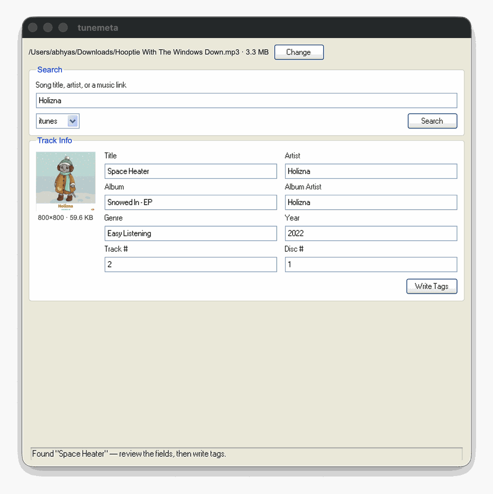

tunemeta
Look up clean, accurate ID3 metadata and cover art for a song, and write it straight into your MP3s.
Download for macOS
An untagged file → search → correct tags and art found.
What it does
- Look up a track by URL, iTunes ID, or free-text search — get back cleaned-up title, artist, album, genre, year, and cover art.
- Write it straight into an MP3's ID3 tags, cover art included, resized sensibly instead of bloating the file.
- Shows what's already tagged on a file before you overwrite it.
Prefer the command line?
pip install git+https://github.com/AbhyasKanaujia/tunemeta.git — see the README for CLI usage.